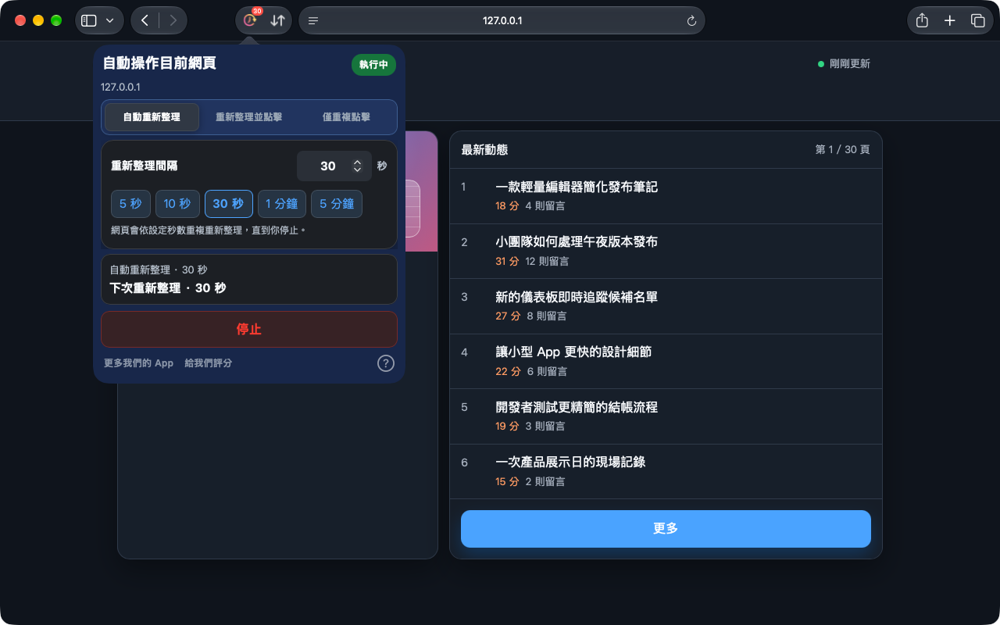
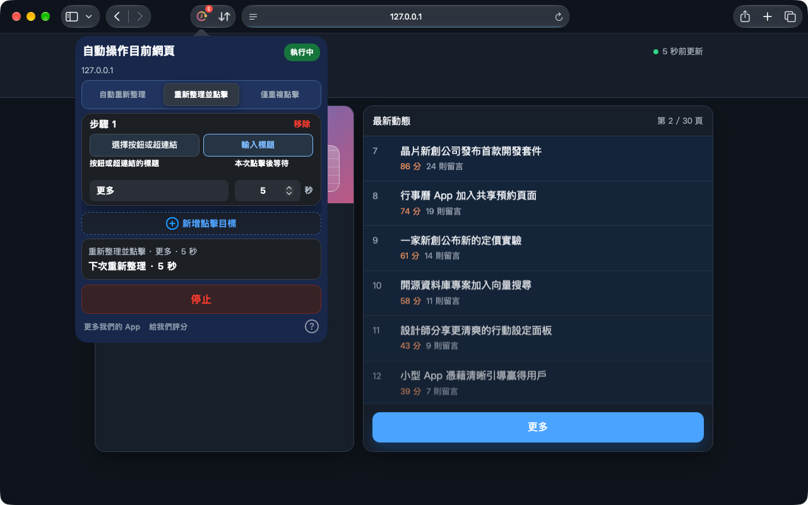
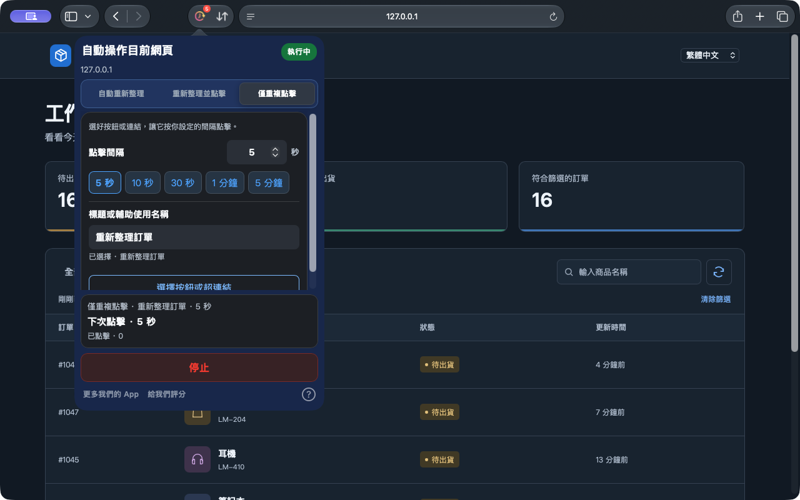

自動重新整理
選擇常用時間或輸入精確間隔，讓看板、庫存與狀態頁面保持更新。
設定自動重新整理Safari 適用於 iPhone、iPad 與 Mac，Chrome 擴充功能適用於電腦。
有的網頁需要重新整理，有的只需要點一下。Auto Refresh & Clicker 幫你在 Safari 網頁中重複這些操作，讓你騰出手做別的事。
在瀏覽器中執行，無須註冊帳號。
Safari 版現已支援選取圖示按鈕與僅重複點擊。Chrome 版另行更新，實際功能請查看對應商店的說明。
看看如何運作


Mac 上的 Safari 1.10.0 · 在本機示範網頁中實際拍攝
從持續更新的看板，到需要反覆點擊的按鈕，為目前網頁選擇適合的任務。
幾個步驟完成設定，隨時確認執行狀態。
安裝後先開啟 App，在 Safari 設定中啟用擴充功能，並允許存取目標網站。
選好模式，再設定間隔或每步等待時間。需要點擊時，可以直接選擇網頁上的按鈕或連結，也可以輸入標題。
點擊開始，查看執行狀態與倒數計時；隨時停止，或套用變更以更新任務。
任務在 Safari 網頁或桌面版 Chrome 擴充功能中執行，不支援其他 App 或系統介面的自動操作。
安裝後先開啟一次 App，再查看 Safari 設定 → 擴充功能。請使用 Safari 15.4 或更新版本。若仍未出現，請聯絡支援，並提供 macOS、Safari、App 版本及安裝來源。
無法保證持續在背景執行。iOS 與 iPadOS 可能暫停瀏覽器任務，執行任務時請保持 Safari 在前景。
目前 Safari 版本支援修改設定後點擊「套用變更」。任務摘要顯示正在使用的設定，點擊「停止」即可結束。
Safari 適用於 iPhone、iPad 與 Mac，Chrome 擴充功能適用於電腦。
目前價格與相容性以各商店頁面為準。